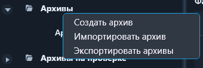
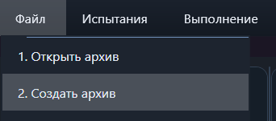
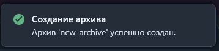
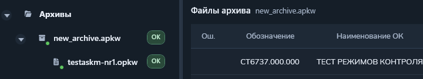
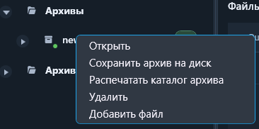
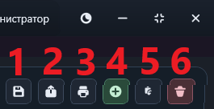
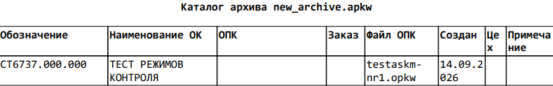
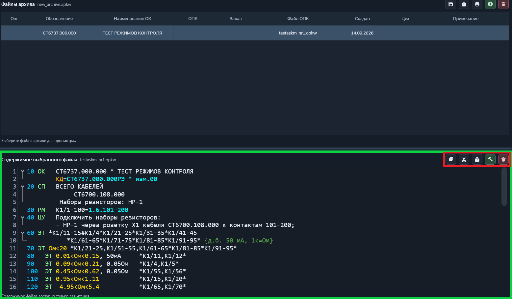
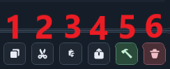
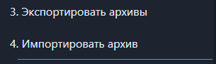

Функция "Архив"
В данной функции можно создать, просмотреть и изменить содержание архивов.
Архив - хранилище неизменяемых программ контроля (расширения: *.apk, *.apkw, *.opk).
Путь и вызов
Нахождение в программе
Верхнее меню → "Файл" → "Открыть архив"
Горячие клавиши
Ctrl + Shift + OНа изображении показано нахождение данной функции в программе:

Чтобы начать работу с архивами нужно 2 раза кликнуть по надписи «Архивы» в левом столбце (рисунок 2).

Откроется список доступных архивов (рисунки 3 и 4).


Создание архива
Создать архив можно вызвав функцию "Создать архив" в верхнем меню (появляется если ранее была использована функция "Открыть архив") или же нажать правой кнопкой мыши по пункту «Архивы» и в открывшемся контекстном меню нажать кнопку «Создать архив».


После откроется окно для ввода названия архива.

После успешного создания архива в правом верхнем углу появится уведомление, а в дереве архивов отобразится только что созданный архив.

Открытие архива
Для открытия архива нужно кликнуть по надписи "Архив", а затем по нужному архиву (подчеркнуто красной линией).
После этого название архива будет отображаться рядом с надписью "Файлы архива" (подчеркнуто зелёной линией).

После этого в основном окне справа появятся программы контроля, находящиеся в архиве.

Удаление архива
Для удаления архива есть два способа:
- Через контекстное меню - навести мышкой на нужный архив, нажать правую кнопку мышки и выбрать соответствующий пункт, как на рисунке 11;
- С помощью кнопки, расположенной справа сверху, как на рисунке 12 (кнопка №6).


Прочие действия с архивом
- Сохранить архив на диск или кнопка №1 (рисунок 12) - сохраняет архив на компьютер в виде файла с расширением *.apkw;
- Кнопка №2 (рисунок 12) - конвертирует архив для старой версии программы управления АСК-МКИ;
- Распечатать каталог архива или кнопка №3 (рисунок 12) - распечатывает каталог программ контроля из выбранного архива (пример на рисунке 13);
- Добавить файл или кнопка №4 (рисунок 12) - добавляет новый файл программы контроля в архив;
- Вставить файл или кнопка №5 (рисунок 12) - вставляет файл в архив из буфера обмена.

Открытие программ контроля в архива
Для открытия программ контроля в архиве есть два способа:
- Нажать на нужный файл *.opkw из списка слева (на рисунке 10 подчеркнуто красной чертой);
- Выбрать нужную программу контроля из списка справа (на рисунке 10 подчеркнуто зелёной линией).
После этого в основном окне снизу откроется окно с содержимым выбранной программы контроля (показано на рисунке 14, обведено в зелёный прямоугольник).

Прочие действия с программой контроля в архиве
С помощью кнопок управления (находятся на рисунке 14 в красном квадрате посередине справа) на рисунке 15 можно:
- Кнопка №1 - копирование содержания программы контроля;
- Кнопка №2 - вырезание (удаление и сохранение в буфере обмена) содержания программы контроля;
- Кнопка №3 - вставка содержания программы контроля из буфера обмена;
- Кнопка №4 - конвертирование в отдельный файл программы контроля расширения *.pkw;
- Кнопка №5 - запустить программу контроля в исполнение;
- Кнопка №6 - удалить программу контроля из архива.

Импорт и экспорт
С помощью контекстного меню (показано на рисунке 5) или кнопок в меню "Файл" (показано на рисунке 16, появляется если ранее была использована функция "Открыть архив") можно экспортировать и импортировать архив.

При импорте открывается файловый менеджер, где нужно выбрать файл расширения *.apkw.
При экспорте открывается файловый менеджер, где нужно выбрать место для сохранения. После в выбранном месте появиться папка "Скачанные архивы", куда будут сохранены все архивы в расширении *.apkw.